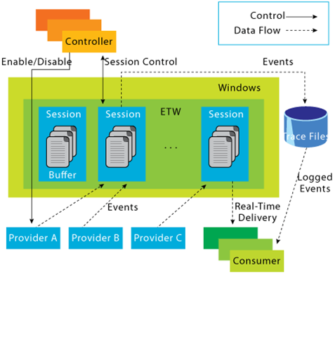

.NET applications production profiling
highlighted on dotNext conference
Goal is give overview of tools for production troubleshouting.
dotNext conference themes
.NET Core
Profiling
ETW
Perfomance
Docker
IL
Rider
PerfView
CLR
Concurency
SPA
WCF
CoreCLR
Reshaper
ASP.NET Core
Plan
Demo: performance profiling
What is ETW?
Demo: memory trafic profiling
ETW and creating own events
Tools
Links
Demo 1
Demo 1: demonstraiting CPU profiling of .NET app.
Event Tracing for Windows (ETW)
Symantic logging
Introduced on Windows 2000
Blazzzing fast
Used in all Windows components and inside .NET
Supported on .NET Core (Linux support is comming)
a general-purpose, high-speed tracing facility provided by the operating system.
Using a buffering and logging mechanism implemented in the kernel, ETW provides a tracing mechanism for
events raised by both user-mode applications and kernel-mode device drivers.
Additionally, ETW gives you the ability to enable and disable logging dynamically,
making it easy to perform detailed tracing in production environments without requiring reboots or application restarts.
The logging mechanism uses per-processor buffers that are written to disk by an asynchronous writer thread.
This allows large-scale server applications to write events with minimum disturbance.
ETW Architecture overview

The core architecture of ETW is illustrated in Figure 1. As shown, there are four main types of components in ETW:
event providers, controllers, consumers, and event trace sessions. Buffering and logging take place
in event tracing sessions, which accept events and create a trace file. There are a number of logging modes
available for ETW sessions. For instance, a session can be configured to deliver events directly to consumer
applications or to overwrite old events in a file by wrapping around when a certain size is reached.
A separate writer thread created for each session flushes them to a file or to real-time consumer applications.
To enable high-performance, per-processor buffers are used to eliminate the need for a lock in the logging path.
ETW Components
event provider
writes events to ETW sessions (it can be any user-mode application, managed application, driver etc)
event consumers
application that reads log files or listens to a session for real time events and processes them
controller
starts and stops ETW sessions and enables providers to them.
event trace session
actual logging and buffering on separate kernel thread per session
logman
Logman query providers
to get all available providers
Logman -start MyTrace -pf providers.txt –ets
start ETW Tracing
Tools
PerfView (http://aka.ms/PerfView )
Logman.exe - command-line controller (Technet article )
tracerpt.exe - a general consumer tool (Technet article )
Windows Performance Analyzer (WPA )
is a tool that creates graphs and data tables of Event Tracing for Windows (ETW) events that are recorded by Windows® Performance Recorder (WPR), Xperf, or an assessment that is run in the Assessment Platform. WPA can open any event trace log (ETL) file for analysis.
Xperf (Xperf
Xperf actions are trace processing components that collate event information to produce text reports. Actions produce summarized reports that are specific to a set of events such as registry accesses, context switches, file accesses, or system configuration.
Usefull links
corefxlab github repo - This repo is for experimentation and exploring new ideas that may or may not make it into the main corefx repo.